Investigating male X heterozygosity in short read sequencing
Table of Contents
1. Introduction
During exome sequencing analyses, we encounter heterozygous variants on the X chromosomes in the male samples. This is not an accurate representation of biological status as males carry only one X and are hemizygous for both sex chromosomes. Except for the pseudoautosomal region (PAR), at the beginning and the end of both chromosomes X and Y span around 3Mb together. This region shows homology between the chromosomes and males are “homozygous” for the regions. This homology makes it possible for chromosomes to pair during cell division and the only place where recombination can occur between X and Y. (Raudsepp et al. 2012) However, the variants we are seeing are located outside of the PAR and are spread across chromosome X. There have also been other groups who come across this and used it to check for sample sex as a form of quality control.(Do et al. 2015) There have been a lot of questions about this around the web with no satisfying answers.
My question was where do these variants are originated? We will be making an empirical observation by looking at the 1000 genome project.
1.1. Calling variant from X chromosome in males
Variant callers assume a diploid genome while calling variants. Males are haploid for the X chromosome meaning there is only one chromosome. Which doesn’t fit the worldview of the variant callers. What makes it even harder is the highly repetitive regions and regions that show a high degree of homology to other loci in the X chromosome. Haplotypecaller has a parameter to give ploidy, but since the data we are dealing with doesn’t represent a haploid chromosome fitting it into a hemizygous genotype calls might be a challenge. 1, 2, 3, 4
2. Materials and Methods
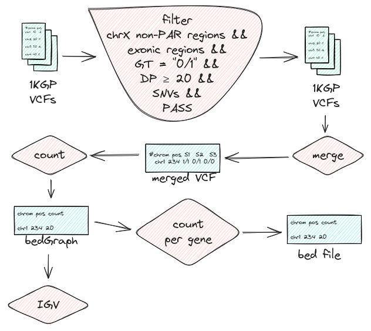
These are whole genome (VCF) files and I can’t download them all, luckily bcftools can query specific regions on them over the line which makes it both space and speed-efficient. The region we are going to query is the X chromosome without the PAR. We are excluding the PAR since it’s a diploid region. We are going to further filtrate the variants to be heterozygous and since this all started from (ES) we are just going to look at the exonic regions. To make things simpler we are going to look at SNVs since INDELs can be challenging to genotype. We also want to have a depth enough to decide the genotype and don’t want anything not passing filters.
We can then merge those files into one, count the number of heterozygous genotypes we see for each position and look at them on IGV. Later we can group them by the gene and see which genes have the most heterozygous variants.
We are going to implement all this workflow in the nextflow.
2.1. VCF files from the 1000genome project
For this job we are going to use individual variant call files from the project since multi-sample VCF are phased. Looking at the individual variant calls there are (NYGC) study from 2019. There are two versions of these with one directory named raw_calls_old and another directory named raw_calls_updated.
The updated directory has a note related to this study that says:
Chromosome X: male samples were processed through HaplotypeCaller with “–ploidy 1” parameter applied to non-PAR regions, and “–ploidy 2” parameter applied to PAR1 and PAR2 regions, whereas female samples were processed using “–ploidy 2” parameter applied to the entire chrX (see table below for the exact coordinates and corresponding ploidy settings).
Since we want to see the genotypes called as a diploid we will be looking at the calls from the old directory. The other different thing about the old directory is that samples are located under the major population directories.
2.2. Preamble
I had these as a variable while writing the workflow but looking at it now they don’t need to be variables. But I am not gonna change them either since it does make what’s being done a bit more transparent.
Click to see the implementation
nextflow.enable.dsl=2 params.source = "RefSeq" params.assembly = "GRCh38" params.version = "latest" params.feature = "exon" params.annot_url = "https://ftp.ncbi.nlm.nih.gov/refseq/H_sapiens/annotation/GRCh38_latest/refseq_identifiers/GRCh38_latest_genomic.gff.gz" params.exons = "${params.source}.${params.assembly}.${params.version}.bed.gz" params.samples_url = 'https://www.internationalgenome.org/api/beta/sample/_search/igsr_samples.tsv' params.samples_data = 'json=%7B%22fields%22%3A%5B%22name%22%2C%22sex%22%2C%22populations.code%22%5D%7D' params.samples_info = "igsr_samples.tsv" params.base_url = 'https://ftp.1000genomes.ebi.ac.uk/vol1/ftp/data_collections/1000G_2504_high_coverage/working/20190425_NYGC_GATK/raw_calls_old' params.genotypes = "genotypes.tsv.gz" params.bedgraph = "genotype_counts.bedGraph"
2.3. Getting the sample metadata
Before everything else we need to know who is male. 1000 genomes project has a download link to their sample data on their portal page. https://www.internationalgenome.org/data-portal/sample
This link makes an API call to another link with the given columns and returns the data. Since we are only looking for the sex of the individuals we only need the fields name and sex but since they’re under the population directories we are also going to need the population codes.
Click to see the implementation
The characters with preceding percent sign are encoded versions of characters like {, [, “, ], }. Because only ASCII character are allowed in the URLs. https://www.w3schools.com/tags/ref_urlencode.ASP {”fields“:[”name“,”sex“,”populations.code"]}
curl \ 'https://www.internationalgenome.org/api/beta/sample/_search/igsr_samples.tsv' \ --data-raw 'json=%7B%22fields%22%3A%5B%22name%22%2C%22sex%22%2C%22populations.code%22%5D%7D' \ -o "igsr_samples.tsv"
2.4. Getting the exon boundaries
Since we are interested in the exons, we need to filter for them, and for that, we need the exon boundaries. We can get it using the annotation file from the RefSeq.
Click to see the implementation
process createbedfile { │ output: │ path("${params.exons}") │ │ shell: │ ''' │ wget -q -O- "!{params.annot_url}" | │ zcat | │ grep 'NC_000023' | │ awk -F"\t" -v feature="!{params.feature}" ' │ │ /^#!/ {print} │ │ /^##/ {next} │ │ $3 ~ feature { │ │ sub(/^NC_[0]+/, "chr"); │ │ sub(/^chr23/, "chrX"); │ │ split($1, chrom, "."); │ │ split($9, info, "ID="); │ │ split(info[2], id, ";"); │ │ printf "%s\t%s\t%s\t%s\n", chrom[1], $4, $5, id[1]}' | │ grep "NM" | │ gzip -c > "!{params.exons}" && │ echo "INFO: BED file created at !{params.exons}" || │ echo "ERROR: An error occurred while creating BED file at !{params.exons}" │ ''' }
This is an AWK command which cleans up the chromosome names and splits the info column to write the exon id to fourth BED column.
2.5. Getting the VCF files
For each of our samples, we create the URL for the VCF file and we pass it to bcftools where we perform the filtering and write it to a BCF file named after the sample.
Click to see the implementation
BCFs are more performant than VCFs. https://www.biostars.org/p/273673/
process getfiltervcf { │ memory '1 GB' │ cpus 1 │ errorStrategy 'ignore' │ input: │ tuple val(sample), val(sex), val(population_code) │ path exons │ │ output: │ path "${sample}.bcf{,.csi}" │ │ shell: │ ''' │ url="!{params.base_url}/!{population_code}/Sample_!{sample}/analysis/!{sample}.haplotypeCalls.er.raw.vcf.gz" │ │ bcftools view "$url" \ │ │ -r chrX:2781479-153925834 \ │ │ -T "!{exons}" \\ │ │ -v snps \ │ │ -f .,PASS \ │ │ -i 'GT=="0/1" && FORMAT/DP>=20' \ │ │ -Ob -o !{sample}.bcf │ bcftools index !{sample}.bcf │ ''' }
2.6. Merging the BCF files
Click to see the implementation
process mergebcf { │ input: │ path(bcfs) │ │ output: │ path 'merged/merged.bcf' │ │ shell: │ ''' │ mkdir merged/ │ bcftools merge *.bcf -Ob -o merged/merged.bcf && │ echo "INFO: Merged BCF file created at merged.bcf" || │ echo "ERROR: An error occurred while merging BCF files" │ ''' }
2.7. Get the genotypes
Bcftools is the workhorse of this pipeline.
Click to see the implementation
process getgenotypes { │ input: │ path 'merged.bcf' │ │ output: │ path(params.genotypes) │ │ shell: │ ''' │ bcftools query \ │ │ merged.bcf \ │ │ -f '%CHROM\t%POS[\t%GT]\n' | \ │ │ gzip -c > !{params.genotypes} && │ │ echo "INFO: Genotypes file created at !{params.genotypes}" || │ │ echo "ERROR: An error occurred while extracting genotypes" │ ''' }
2.8. Count the genotypes
To count we are using awk, and printing them out in a bedGraph format.
Click to see the implementation
process createbedgraph { │ input: │ path(params.genotypes) │ │ output: │ path(params.bedgraph) │ │ shell: │ ''' │ zcat !{params.genotypes} | awk -F"\t" 'BEGIN { │ │ print "track type=bedGraph visibility=full color=255,153,0 altColor=0,0,0" │ } │ { │ │ count = 0 │ │ for (i = 3; i <= NF; i++) { │ │ if ($i == "0/1") count++ │ │ } │ │ printf "%s\t%s\t%s\t%s\n" $1, $2, $2, count │ }' > !{params.bedgraph} && │ echo "INFO: BedGraph file created at !{params.bedgraph}" || │ echo "ERROR: An error occurred while creating BedGraph file" │ ''' }
2.9. Create gene bed
This is pretty much the same as what we did with the exons but with the genes.
Click to see the implementation
process creategenebed { │ output: │ path "genes.bed" │ │ shell: │ ''' │ wget -q -O- "!{params.annot_url}" | │ zcat | │ grep 'NC_000023' | │ awk -F"\t" -v feature="gene" ' │ │ /^#!/ {print} │ │ /^##/ {next} │ │ $3 ~ feature { │ │ sub(/^NC_[0]+/, "chr"); │ │ sub(/^chr23/, "chrX"); │ │ split($1, chrom, "."); │ │ split($9, info, "ID="); │ │ split(info[2], id, ";"); │ │ printf "%s\t%s\t%s\t%s\n", chrom[1], $4, $5, id[1]}' | │ gzip -c > "genes.bed.gz" && │ echo "INFO: BED file created at genes.bed" || │ echo "ERROR: An error occurred while creating BED file at genes.bed" │ ''' }
2.10. Get genotype counts sum per gene
This looks long but there is no benefit splitting into separate tasks. Two similar tasks are being performed here only difference between the commands is the datamash operations we are performing. One counts the number of positions and other sums the actual genetype counts.
We perform the same operation for both of them by getting the top 20 and merging back the gene positions.
Click to see the implementation
process getgenecounts { │ │ input: │ path(genotype_counts), path(genes_bed) │ │ output: │ path "genotype_counts_by_gene.txt" │ │ shell: │ ''' │ bedtools intersect \ │ │ -a !{genotype_counts} \ │ │ -b !{genes_bed} -wb | │ │ awk '{printf "%s\t%s\t%s\t%s\t%s\n", $1, $2, $3, $4, $8}' | │ │ datamash -s -g 5 sum 4 | │ │ sort -k 2,2n > genotype_counts_per_gene_by_sum.txt │ │ │ bedtools intersect \ │ │ -a !{genotype_counts} \ │ │ -b !{genes_bed} -wb | │ │ awk '{printf "%s\t%s\t%s\t%s\t%s\n", $1, $2, $3, $4, $8}' | │ │ datamash -s -g 5 count 4 | │ │ sort -k 2,2n > genotype_counts_per_gene_by_count.txt │ │ │ tail -n 20 genotype_counts_per_gene_by_sum.txt | sort > top_20_genes_by_sum_sorted_by_name.txt │ zcat genes.bed.gz | awk '{printf "%s\t%s\t%s\t%s\n", $4,$1,$2,$3}' | sort -k 1,1 > genes_sorted_by_name.bed │ join top_20_genes_by_sum_sorted_by_name.txt genes_sorted_by_name.bed | awk '{printf "%s\t%s\t%s\t%s\n", $3, $4, $5, $1}'> top_20_genes_by_sum_with_positions.bed │ │ tail -n 20 genotype_counts_per_gene_by_count.txt | sort > top_20_genes_by_count_sorted_by_name.txt │ zcat genes.bed.gz | awk '{printf "%s\t%s\t%s\t%s\n", $4,$1,$2,$3}' | sort -k 1,1 > genes_sorted_by_name.bed │ join top_20_genes_by_count_sorted_by_name.txt genes_sorted_by_name.bed | awk '{printf "%s\t%s\t%s\t%s\n", $3, $4, $5, $1}'> top_20_genes_by_count_with_positions.bed │ ''' }
2.11. Workflow
Here only notable parts are; that we are splitting the samplesheet and filtering by male and collecting the bcf files before passing to them to mergebcf process.
Click to see the implementation
workflow { │ getsamplesheet() │ samplesheet = getsamplesheet.out │ samplesheet │ │ .splitCsv(header:["sample", "sex", "population_code"], │ │ │ sep:"\t", │ │ │ skip:1 │ │ ) │ │ .filter { row -> row.sex == "male" && row.population_code } │ │ | set {samples} │ createbedfile() │ bcfs = getfiltervcf(samples, createbedfile.out) │ mergebcf(bcfs.collect()) │ getgenotypes(mergebcf.out) │ createbedgraph(getgenotypes.out) │ creategenebed() │ getgenecounts( │ │ createbedgraph.out │ │ creategenebed.out │ ) }
3. Results
We found a total of 71553 heterozygous genotype calls in 1223 male samples. 2 pairs of the genes here are overlapping; PABPC1P3 overlaps RLIM and DDX53 overlaps PTCHD1-AS.
| symbol | sum of genotype counts | symbol | number of het positions |
|---|---|---|---|
| SLC25A5 | 30694 | LRCH2 | 169 |
| RLIM | 10839 | RBMXL3 | 162 |
| PABPC1P3 | 10824 | PWWP4 | 120 |
| RBMX | 10370 | SLC25A5 | 79 |
| XAGE3 | 3537 | MAGEC1 | 72 |
| MAGEC1 | 2120 | ARMCX4 | 63 |
| ZXDB | 1135 | VCX3A | 63 |
| CT45A3 | 937 | MAGEE1 | 58 |
| GAGE2A | 606 | SPANXB1 | 56 |
| PTCHD1-AS | 597 | FAM47C | 48 |
| DDX53 | 596 | RLIM | 47 |
| SPANXB1 | 572 | PABPC1P3 | 41 |
| GAGE12B | 564 | NKAP | 40 |
| PWWP4 | 517 | TEX13C | 40 |
| SPANXD | 493 | RBMX | 37 |
| VCX3B | 436 | TRAPPC2 | 35 |
| GAGE13 | 393 | FGF13 | 34 |
| VCX | 338 | GAGE2A | 34 |
| GAGE10 | 310 | NR0B1 | 33 |
| LRCH2 | 290 | VCX | 33 |
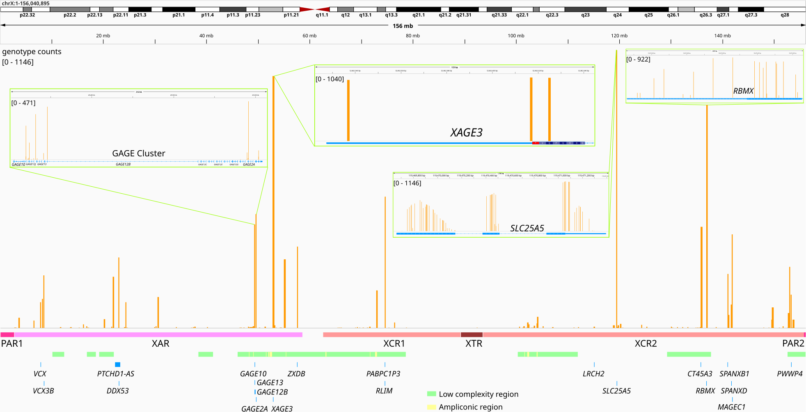
Figure 1: Sum of genotype counts with close up to some genes. There are four tracks here. The first track shows the genotype counts along the whole chromosome X. Second track is the major regions in chromosome X (PAR, x-added region (XAR), x-conserved region (XCR), x-transposed region (XTR)). Below that is the low complexity and ampliconic regions. At the bottom top 20 genes with the highest heterozygous genotype counts sum. Close-up IGV screenshots of some genes and regions are also included to give a better sense.
To further investigate I run the BLAT tool on IGV on some of the hits. The tracks with the gray bars show the BLAT matches.
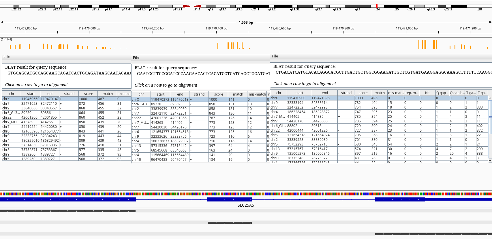
Figure 2: BLAT query of SLC25A5 on chrX.
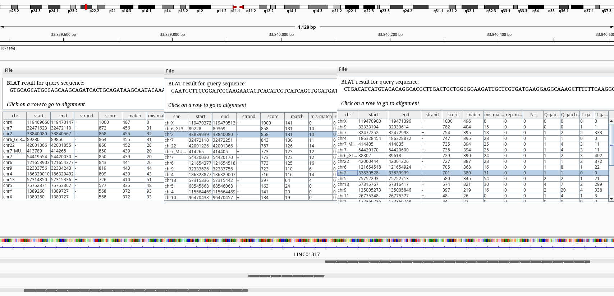
Figure 3: BLAT query of SLC25A5 on chr2.
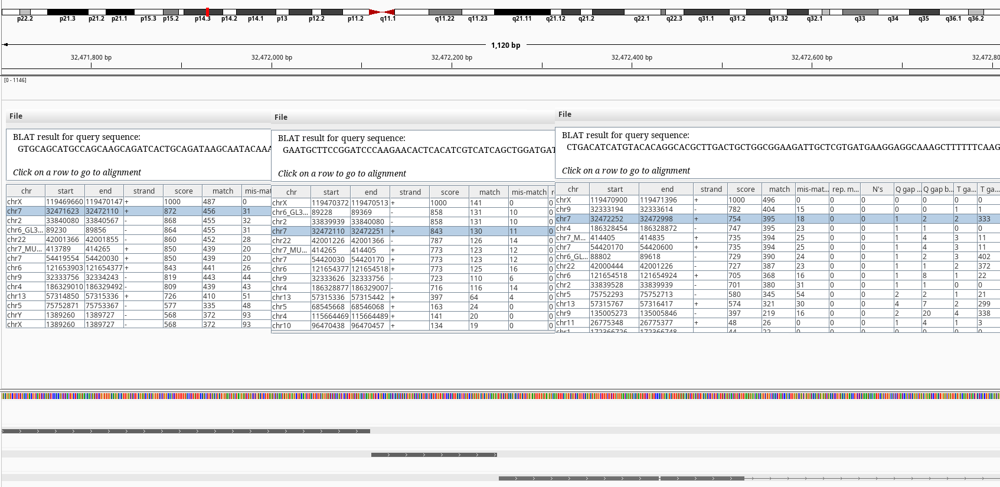
Figure 4: BLAT query of SLC25A5 on chr7.
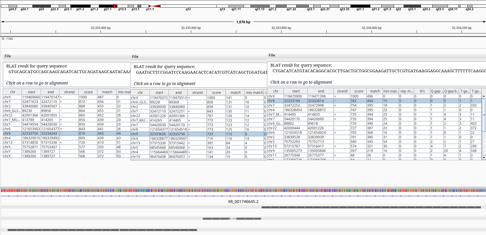
Figure 5: BLAT query of SLC25A5 on chr9.
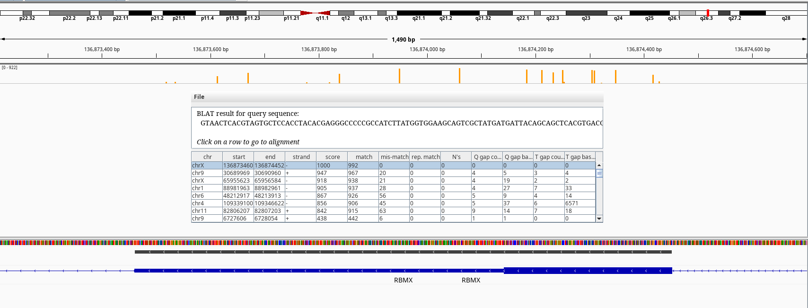
Figure 6: BLAT query of RBMX on chrX.
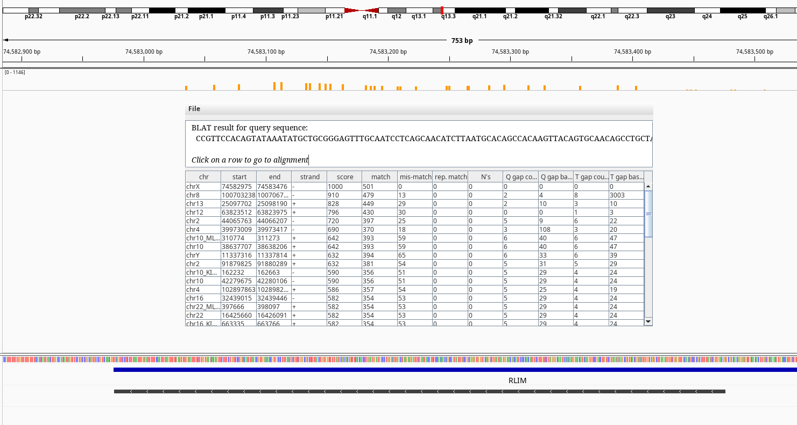
Figure 7: BLAT query of RLIM on chrX.
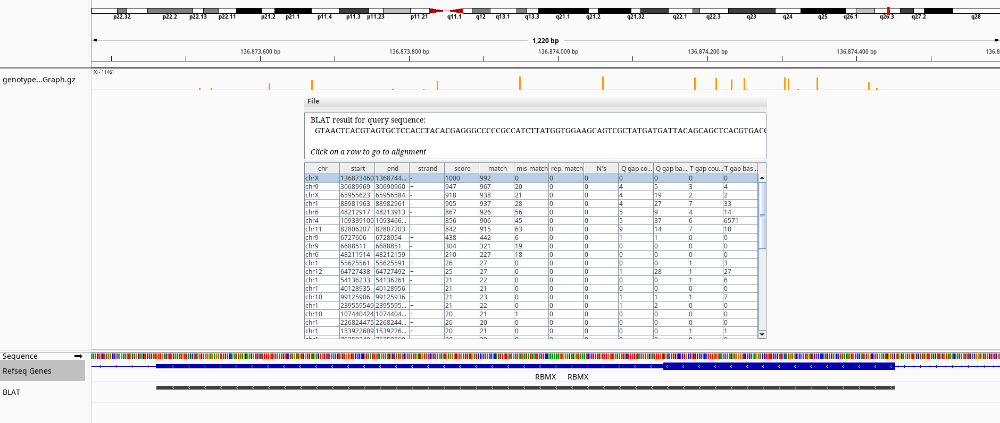
Figure 8: BLAT query of RBMXL3 on chrX.
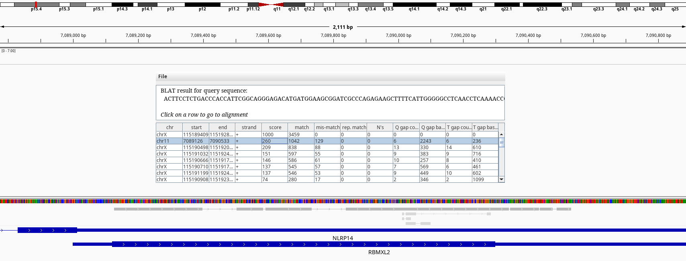
Figure 9: BLAT query of RBMXL3 on chr11.
4. Discussion
The BLAT results shows exons of SLC25A5 in other chromosomes namely 2, 7, and 9 without its introns. Searching by the gene symbol alone in genenames.org shows it has 9 pseudogenes SLC25A5P1-9. It looks like there have been multiple retrotranspositions events. The one on the chr7 doesn’t have an annotation on RefSeq.
Another one with high amount of heterozgosity is the RBMX gene. There is a naming conviction of gametolog gene symbols: if it ends with “X”, that gene might have a gametolog on chromosome Y which its symbol ends with “Y”. e.g. AMELX and AMELY or PRKX and PRKY. In this case however, there is no gene named RBMY but multiple RBMY1A, RBMY1B etc. RBMX is a member of a gene family, which their members reside in chromose Y. BLAT of our RMBX exon 9 doesn’t return any hits to any of the Y chromosome relatives. But, the RBMX has multiple pseudogenes on chromosomes 1, 4, 6, 9, 11 according to NCBI gene summary like SLC25A5 also derived from retrotransposition events.
Maybe what we are seeing here might be the one of the limitations of short read sequencing. Our genome has the same sequences scatter around with events like retrotransposition, duplications, and translocations. We can’t separate where these reads are coming from and seeing them mistakenly aligned.
Here we just looked at the chromosome X but its most likely the same errors happen all around the genome. There will be other regions with false mappings and sequence errors in the genome that we will inadvertently see as heterozygous. We are just not looking because they’re diploid regions and seeing heterozgous variants is expected.
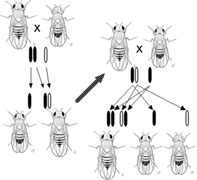
Figure 10: Discovery of gene-chromosome relation
Studying sex chromosomes shows us a different view because of their unique inheritance and biology and makes it possible to further question our models.
This has been a qualitative investigation and haven’t looked at the variant allele fractions.
Maybe the X chromosome can be use to model this (pseudogene and gene family) - varaint allele fraction relation to re calibrate variant heterozygosity in sequencing studies.
5. References
7. Glossary
Ampliconic region Large regions (about 30% of the MSY euchromatin) where sequence pairs show greater than 99.9% identity, which is maintained by frequent gene conversion (non-reciprocal transfer) 1
Pseudoautosomal region Region shared between the allosomes. PARs are located at the end of the chromosomes. 1, 2, 3, 4, 5, 6
X-transposed region The X-transposed sequences are 99% identical to DNA sequences in Xq21 originating from X-to-Y transposition event from 3–4 million years ago. 1
X-conserved region X region that is evolutionary conversed between therian mammals. 1
X-added region X region that is recently added in the eutherian lineage. 1